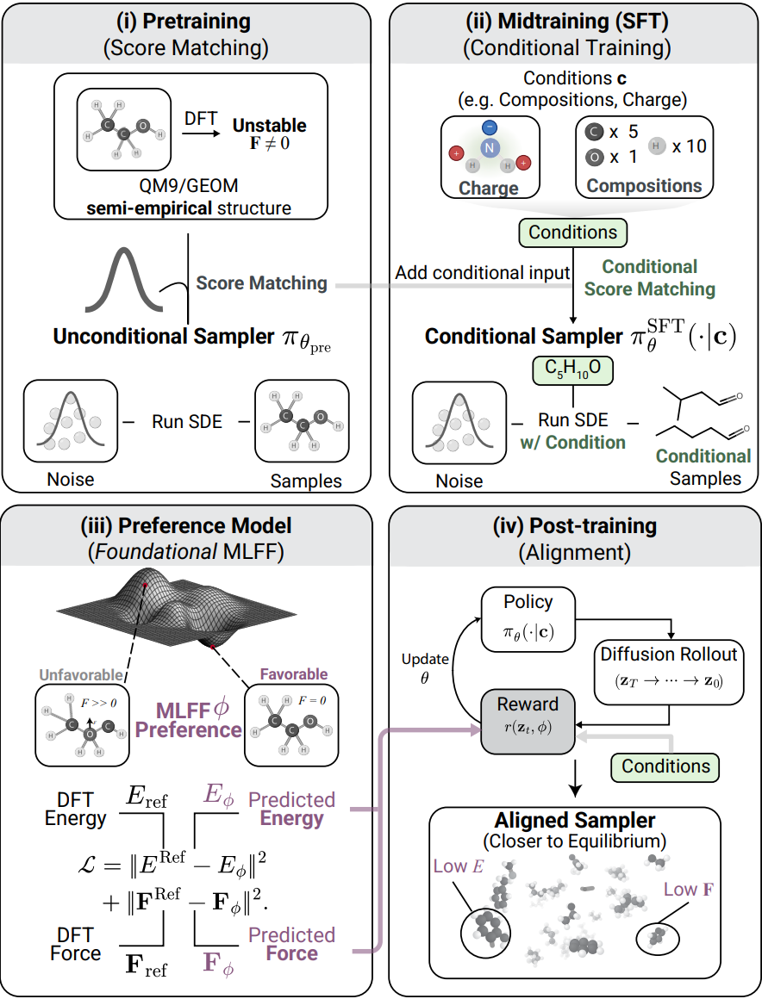
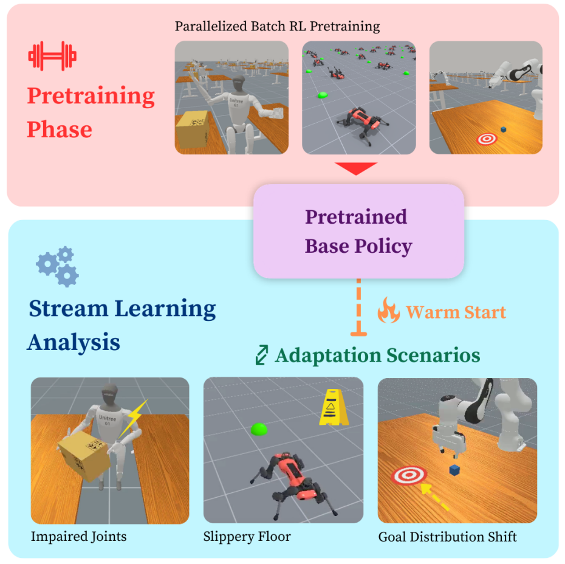

Huawei Noah’s Ark Lab
May to August 2026Research Intern, advised by Dr. Boxing Chen
Sparse attention and speculative decoding for LLM inference; two pull requests to DeepSeek’s DeepSpec.
Computer Science and Mathematics @ Yale ’28
I’m a junior at Yale studying computer science and mathematics. I’m interested in generative models for decision-making: diffusion and flow-based policies, world models, and reinforcement learning with expressive policies, from the theory of generative modeling to how these models plan and act. Previously, at Huawei Noah’s Ark Lab, I worked on efficient inference for large language models, including sparse attention and speculative decoding.
Lost in a Few Heads: Diagnosing and Repairing Block Selection in Sparse Attention Language Models
Under review at ICLR 2027
Traces the long-context retrieval loss of deployed sparse-attention LLMs to a few attention heads whose block selector cannot resolve a single decisive token, and repairs it without training.

Elign: Equivariant Diffusion Model Alignment from Foundational Machine Learning Force Fields
ICML 2026 · arXiv
Post-trains an E(3)-equivariant molecular diffusion model with GRPO, using a foundational machine-learning force field as the reward.

An Analysis of Streaming Deep Reinforcement Learning for Adaptive Continual Learning in Robotics
IROS 2026 Workshop · Spotlight · arXiv · OpenReview
Streaming deep RL for continual online adaptation of pretrained robot policies.
Acceptance Is Not Throughput: A Unified Law for Parallel Speculative Decoding
Manuscript in preparation
A throughput law that places parallel drafters on one curve through their conditioning depth, showing that most levers the field pushes raise acceptance length without raising speed.
Research Intern, advised by Dr. Boxing Chen
Sparse attention and speculative decoding for LLM inference; two pull requests to DeepSeek’s DeepSpec.
Research Assistant, advised by Prof. Rex Ying
Test-time memory for LLMs; time-series LLMs.
Research Assistant, advised by Prof. Daniel Rakita
Streaming RL for adapting pretrained robot policies.
Research Assistant, advised by Prof. Mark Gerstein
RL fine-tuning of equivariant diffusion models for molecular generation.